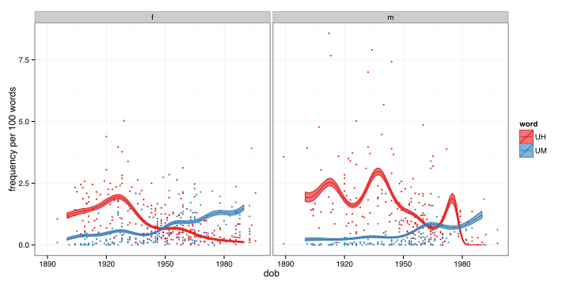
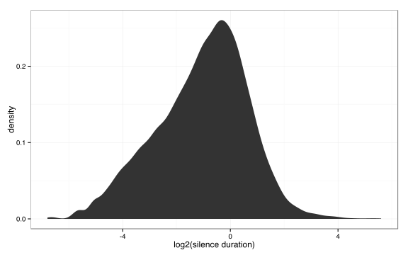
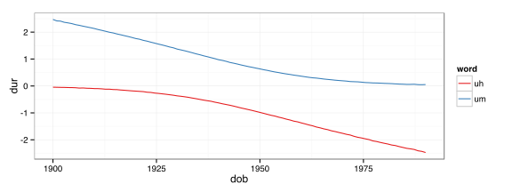

Filled Pauses as a um…
Sociolinguistic Variable
Josef Fruehwald
University of Edinburgh
August 9, 2015
“Sociolinguistic Variable”
What is a Sociolinguistic Variable?
The “sociolinguistic” part of the title might suggest that I’ll be talking about:
- style
- gender
- class
- social meaning
What is a Sociolinguistic Variable?
Different ways of saying the same thing.
Language use is not deterministic, i.e. even in narrowly defined linguistic and social contexts, there is structured optionality. (Weinreich, Labov & Herzog, 1968, and so on)
Variationist Questions
- What is the nature of the selection process that leads to one alternative being used vs another?
- How is this selection process integrated into grammatical and cognitive systems?
This Talk
- Filled pauses look and walk and quack like a sociolinguistic variable.
- This is a bit challenging for how many linguists try to account for optionality.
- This intersects with a few questions under discussion in the disfluency literature.
Changes in Filled Pauses
The Data
The data in this talk is drawn from the Philadelphia Neighborhood Corpus.
- Sociolinguistic interviews conducted between 1973 and 2013.
- Topics were about participants’ lives and neighborhoods.
- Interviewers tried to elicit narratives of personal experiences.
Philadelphia, 1973
Philadelphia, 1973
Philadelphia, 2013
The Data
| UH | UM | Total |
|---|---|---|
| 19,123 | 6,391 | 25,514 |
- Extracted from the Philadelphia Neighborhood Corpus alignments.
| speakers | transcribed audio | words | stressed vowels | date of birth range |
|---|---|---|---|---|
| 395 | 230.9 hours | 1,415,677 | 743,461 | 1889-1998 |
The Data
A Change in Progress

A Change in English
- English (Wieling et al, forthcoming)
- The Switchboard Corpus
- The Fisher Corpus
- The British National Corpus
- (The HCRC Map Task Corpus)
A change in Germanic
- German
- Forschungs- und Lehrkorpus Gesprochenes Deutsch
- Dutch
- Corpus Gesproken Nederlands
- Norwegian
- Nordic Dialect Corpus and Syntax Database
- Danish and Faroese
- Faroese Danish Corpus Hamburg
(Wieling et al, forthcoming)
What’s going on here?
It’s a generational change
Alternatives to generational shifts
Maybe the observed pattern is due to an age-linked pattern of use: As speakers get older, they use UH more.
Modelling 2 time dimensions
- 2 dimensional tensor product
- (date of birth, year)
- logistic link
- random intercepts for speakers
gamm4(UM ~ t2(dob, year, bs = "tp"), random = ~ (1|speaker))Results
- Date of birth cohorts are flat across every date of interview (no age-linked trend)
- Date of birth cohorts are stratified (generational shift)
Conclusion
Whatever it is, it’s playing out as an inter-generational shift.
Over-all filled pause rate
Filled Pause by DOB
Filled pauses by age
What is Changing Here?
“The Same Thing”
If Clark & Fox Tree (2002) are correct, and
- [[UM]] = long processing delay
- [[UH]] = short processing delay
what would it mean for UM to be used more often?
Alternative
This isn’t a shift in equivalent alternatives, but a shift in meanings being expressed.
Alternatives
- There is a new discourse use of UM coming into use.
- People are signalling more long processing delays than they used to.
New Discourse Use of UM
UM and UH Separately

- Men’s data is a bit chaotic.
- Women really look like they’re trading off UM for UH.
Changing Message
It seems like UM and UH are trading off in frequency, but what is trading off:
- The frequency of use of UM vs UH?
- The frequency of the messages that UM and UH convey?
The message space

Following Clark & Fox Tree (2002), I’ll be treating the duration of following silence as the message space.
Usage Change vs Message Change
A change of usage within a stable communicative context will have a different quantitative profile from a change in the messages being signaled with a stable usage system.
Changing Messages
Silence Duration
Modelling
## Data: pause_for_mod
## Models:
## dur_mod4: log2dur ~ 1 + (1 | idstring)
## dur_mod3: log2dur ~ sex + (1 | idstring)
## dur_mod2: log2dur ~ decade + sex + (1 | idstring)
## dur_mod1: log2dur ~ decade * sex + (1 | idstring)
## Df AIC BIC logLik deviance Chisq Chi Df Pr(>Chisq)
## dur_mod4 3 70358 70382 -35176 70352
## dur_mod3 4 70354 70385 -35173 70346 6.3190 1 0.01194 *
## dur_mod2 5 70354 70393 -35172 70344 2.1684 1 0.14087
## dur_mod1 6 70355 70402 -35172 70343 0.7363 1 0.39084
## ---
## Signif. codes: 0 '***' 0.001 '**' 0.01 '*' 0.05 '.' 0.1 ' ' 1Changing Messages
There is equivocal evidence compatible with the hypothesis that the messages speakers are sending, or their speech planning difficulties, are changing over time.
Changing Usage

Silece Duration by Filled Pause
Modelling
The model with the full dob\(\times\)word\(\times\)gender has the lowest AIC, and is favored by the likelihood ratio tests.
The model without any date of birth predictor has the lowest BIC.
## Data: um_for_mod
## Models:
## um_mod3: log2dur ~ word * sex + (1 | idstring)
## um_mod2: log2dur ~ decade * sex + word * sex + (1 | idstring)
## um_mod1: log2dur ~ decade * word * sex + (1 | idstring)
## Df AIC BIC logLik deviance Chisq Chi Df Pr(>Chisq)
## um_mod3 6 69918 69965 -34953 69906
## um_mod2 8 69910 69972 -34947 69894 12.4935 2 0.001937 **
## um_mod1 10 69905 69983 -34943 69885 8.5948 2 0.013604 *
## ---
## Signif. codes: 0 '***' 0.001 '**' 0.01 '*' 0.05 '.' 0.1 ' ' 1Silence Predictive Power
Under the changing messages hypothesis, the predictive power of the duration of following silences should be stable.
Under the changing usage hypothesis, its predictive power should decrease as speakers start using “um” more often irrespective of the context.
Silence Predictive Power
What is Changing?
- The evidence is equivocal at best that what is being communicated (or speakers’ speech planning difficulties) are changing over time.
- There is better evidence that speakers’ usage choices are changing within a fixed context.
Wrapping Up
The Upshot
The frequency with which speakers use UM or UH as a filled pauses is a non-trivial, but arbitrary aspect of the knowledge of their language, and it can change.
Speakers must be able to track frequencies of UM vs UH, despite the fact that they can’t accurately explicitly report back when they’ve heard them (Lickley 1995; Lickley & Bard 1996)
Meaning of UM vs UH
The “meaning” of UM and UH may function similarly to other sociolinguistic variables.
- (ING)
- walking is preferred in formal speech, and gerunds
- walkin’ is preferred in casual speech, and participles
- (UHM)
- UM is preferred in long delay contexts.
- UH is preferred in short delay contexts.
Words like any other?
While others have noted that following UM and UH can condition the long form of preceding, the [ði:], systematically absent from the PNC is any examples of it triggering a preceding an.
- There used to be [ə ə] entry way there.
- He worked as [ei ʌm ʌm] accident investigator.
- He was [ə ə ə: ən] Onondaga, from Canada.
- Her husband is [ei ə: ən] officer of the guards in a federal penitentiary.
- I had [ə ə: ən] appendix attack.
- I was [ei ə: ən] insurance man though.
- In fact there’s [ei ə: ən] automobile parts house there.
- My husband is [ei ə: ən] engineering contractor.
Variationist Questions
- What is the nature of the selection process that leads to one alternative being used vs another?
- How is this selection process integrated into grammatical and cognitive systems?
Perhaps pursuing further the points of contact between these two areas of study will be enlightening to both of us.